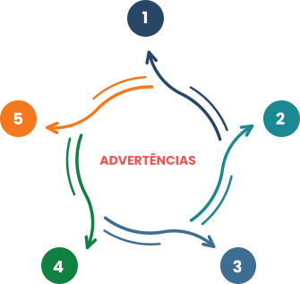

TÓPICO 3
ESTRATÉGIAS PARA PROMOVER UMA GESTÃO PARTICIPATIVA – PARTE 2
TÓPICO 3
ESTRATÉGIAS PARA PROMOVER UMA GESTÃO PARTICIPATIVA – PARTE 2
Algumas advertências são úteis em relação à construção e ao desenvolvimento do apoio institucional.
Clique nos números para conhecê-las.
Na construção do AI, é importante atentar-se a práticas e discursos habituais nas relações de gestão e trabalho, como “[…] imposição de ordens, culpabilização do trabalhador [e dos usuários], diálogo curto (vertical), falta de consenso (pactos entre os sujeitos)” (MACHADO et al., 2018, p. 819).
1
x
A postura do apoiador não deve ser de alguém de fora, com uma posição de especialista, detentor do saber em função do qual ele apresenta soluções e respostas previamente formuladas para as questões levantadas pelo grupo. Ao contrário, sua intervenção se compõe a partir da dinâmica singular do grupo, compartilhando a responsabilidade pelos movimentos disparados.
2
x
É usual que muitos dos sujeitos envolvidos confundam as atribuições e o papel do apoiador com aqueles aos quais já está habituado, como mencionado a respeito da assessoria, da consultoria ou da supervisão. Isso pode acontecer com trabalhadores, gestores e até mesmo apoiadores, e deve ser observado e dirimido ao longo do processo.
3
x
Além das dificuldades de compreensão do papel do AI, um ponto relatado é o número restrito de apoiadores em relação à quantidade de equipes apoiadas, ou o fato de o apoiador não estabelecer a proximidade necessária com o território de atuação das equipes.
4
x
Há também a percepção, tanto por trabalhadores quanto por gestores, de que o apoiador deve responder por questões administrativas das unidades de saúde que não têm relação direta com os movimentos e os planos de ação construídos na intervenção.
5
x